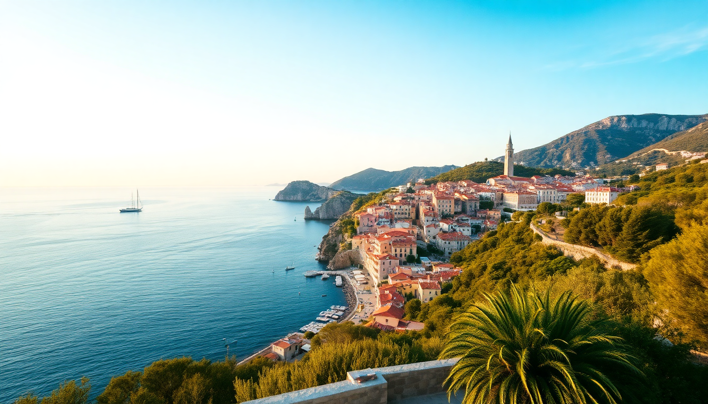

Best Day Trips from Dubrovnik: Korcula, Mostar & Lokrum

I spent a week based in Dubrovnik last June, and while the Old City is stunning, it gets crowded fast. The real trick is using Dubrovnik as a launchpad. Here’s what I learned about getting to Korcula, Mostar, and Lokrum — three very different trips, each worth your time.
Is a day trip to Korcula worth the ferry ride?
Yes, but only if you catch the early catamaran. Korcula Town is often called “mini-Dubrovnik,” but I think that undersells it — the stone streets are quieter, the waterfront cafes feel more local, and the Marco Polo house is a fun 10-minute stop. The ferry from Dubrovnik’s Gruž Port takes about 2 hours with Jadrolinija or Krilo. I went with Krilo’s high-speed catamaran, which cost around €45 round-trip.
- Korcula Old Town — walk the main street from the Revelin Tower to the Cathedral of St. Mark; it’s a straight shot and easy to navigate in two hours.
- Hotel Liburna — I had lunch on their terrace overlooking the Pelješac peninsula; the grilled squid was simple and good.
- Moreska Sword Dance — if you’re there on a summer Thursday evening, the outdoor performance in front of the cathedral is worth the €10 ticket.
- Lumbarda — skip it unless you have a car; the bus from Korcula Town is unreliable and eats up too much time.
How do you get to Mostar from Dubrovnik in one day?
By tour van or rental car — there’s no direct bus that gives you enough time. I booked a small-group tour through a local operator that picked me up at 7 AM from Pile Gate. The drive crosses the border into Bosnia and Herzegovina at Neum, then winds through the Neretva Valley. The whole trip is about 2.5 hours each way. Bring your passport; the border check took 10 minutes each way.
- Stari Most (Old Bridge) — the main attraction. I watched a diver leap from the bridge for tips at noon; it’s a touristy ritual but genuinely impressive.
- Kujundžiluk Bazaar — the street of copper shops and souvenir stalls. I bought a small hand-hammered coffee set for €15.
- Restaurant Tima-Irma — a Bosnian place on the riverbank where I had ćevapi with flatbread and onions for under €6. No frills, excellent.
- War Photo Exhibition — inside the Tower of the Old Bridge. It’s a sobering 20-minute stop that gives context to the city’s recent history.
What’s the deal with Lokrum Island — is it just a beach trip?
Lokrum is a 15-minute ferry from Dubrovnik’s Old Port, and it’s not really a beach destination. There’s one rocky swimming spot (the “dead sea” saltwater lake), but the real draw is walking the island’s trails and seeing the ruins. I spent about four hours there, which was enough to cover everything without rushing. The ferry runs every 30 minutes in summer, round-trip costs about €15.
- Benedictine Monastery ruins — the cloister garden has a wild, overgrown feel; peacocks roam freely and they’re not shy.
- Fort Royal — a 19th-century fortress at the island’s highest point. The view back toward Dubrovnik’s walls is the best photo you’ll get without a drone.
- The “Dead Sea” — a small saltwater pool surrounded by rocks. It gets packed by 11 AM; go early or skip it.
- Botanical Garden — planted in the 1950s with species from around the world. It’s free and a nice shady walk on a hot day.
When is the best time of year for these day trips?
Late May through early October is the window, but June and September are the sweet spots. I went in mid-June and the ferry to Korcula was half-full, Mostar wasn’t sweltering, and Lokrum felt peaceful until noon. July and August bring heat and crowds — the Lokrum ferry line can stretch 45 minutes by 10 AM.
What should I pack differently for each trip?
Each day trip needs a different bag. For Korcula, bring swim trunks and a towel — the ferry stops at Lopud on the way back, and you can jump off for a swim. For Mostar, take a light jacket (the river breeze is cool) and cash in euros (Bosnia uses the convertible mark, but most tourist spots accept euros at a fair rate). For Lokrum, just water and sunscreen — there’s no café on the island that’s worth the prices.
FAQ
Can I do all three day trips in a row? You can, but I wouldn’t. Mostar takes a full day with the drive, and you’ll be tired. I did Lokrum on my first day (easy, close), Korcula on day three (ferry schedule is forgiving), and Mostar on day five (to break up the Old City time). Spacing them out lets you enjoy Dubrovnik’s evenings without rushing.
Is Mostar safe for a solo traveler? Yes, I felt completely safe walking around the Old Town and the main bridge area as a solo male traveler. The bazaar vendors are pushy but not aggressive. Just keep your wits about you near the bus station after dark — standard city safety applies.
Do I need to book ferry tickets in advance for Lokrum? Not really. The ferries run constantly in summer, and you buy tickets at the dock kiosk right before boarding. For Korcula, I’d book the catamaran a day ahead online — the 8 AM sailing sells out in peak season.
Conclusion
- Lokrum is your half-day escape from crowds — go early, walk the fortress, and don’t expect a real beach.
- Korcula needs a full day and a pre-booked catamaran; the Old Town is worth the trip, but skip Lumbarda.
- Mostar requires a tour or rental car; the drive is scenic but long, and the Old Bridge area is compact enough to see in 3–4 hours.
- Pack light, carry cash, and always check the last ferry time before you wander.